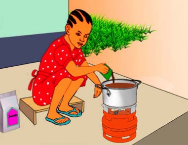
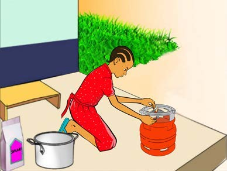
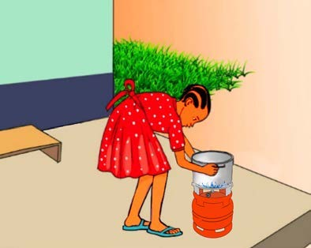
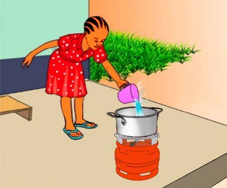
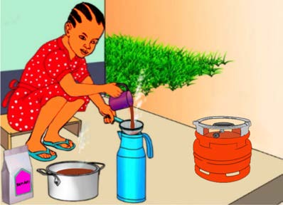
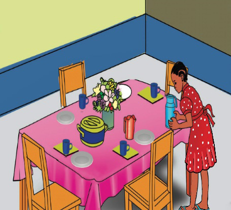

Chunguza mfululizo wa picha au mchoro mguso, kisha andika habari fupi kwa mtiririko sahihi; tumia eneo la kuandikia, kibodi au Breli.






B. Andika habari fupi kwa mtiririko sahihi wa matukio kutokana na picha zifuatazo:
Chunguza mfululizo wa picha au mchoro mguso, kisha andika habari fupi kwa mtiririko sahihi; tumia eneo la kuandikia, kibodi au Breli.





